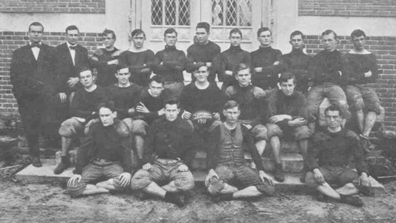
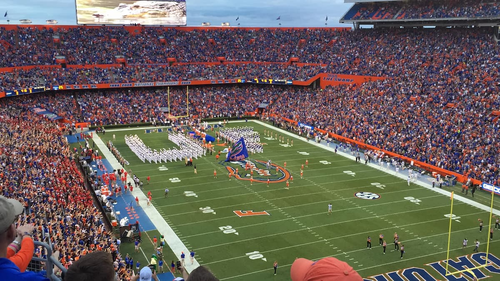
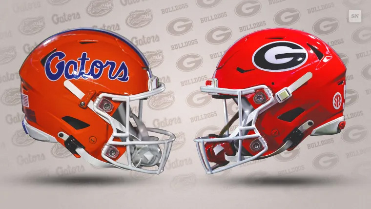
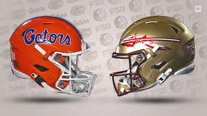
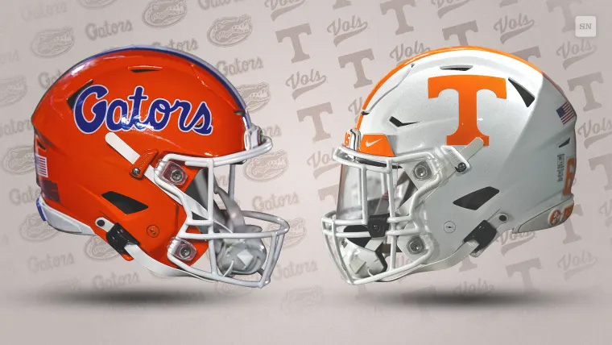
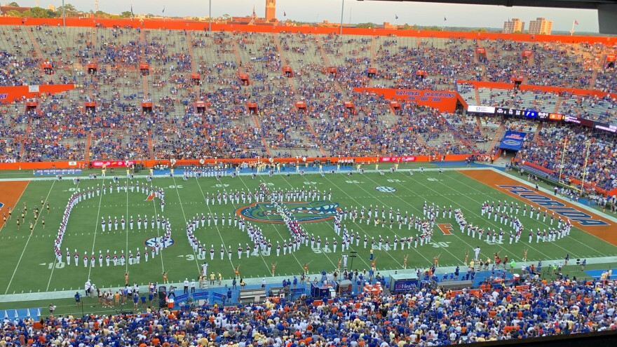

Program History
Florida Gators football began in 1906, marking the start of one of the most successful programs in college football. The team represents the University of Florida and competes in the Southeastern Conference (SEC), one of the most competitive conferences in the NCAA. Over the years, the Gators have built a strong reputation for producing talented players and competing at the highest level of college football. The program has won three national championships (1996, 2006, and 2008) and multiple SEC titles, helping establish Florida as a powerhouse in the sport. Through decades of competition, Florida Gators football has grown into a proud tradition supported by passionate fans and a legacy of success.

The 1911 Florida Gators football team
The Swamp
Ben Hill Griffin Stadium, commonly known as “The Swamp,” has been the home of Florida Gators football since 1930. Located on the University of Florida campus in Gainesville, the stadium holds more than 88,000 fans and is one of the largest venues in college football. The nickname “The Swamp” reflects the intense and challenging environment created by the passionate crowd and Florida’s warm climate. Over the years, the stadium has become one of the most iconic locations in college football, giving the Gators a strong home-field advantage and creating an unforgettable game-day atmosphere for players and fans alike.

Ben Hill Griffin Stadium, also known as The Swamp
Rivalries
Florida Gators football has several intense rivalries that have become an important part of the program’s tradition. These matchups bring passionate fans, historic moments, and high-stakes competition each season. Rivalry games often attract national attention and create some of the most exciting environments in college football.
Florida vs. Georgia
One of the most famous rivalries in college football is the annual Florida–Georgia game. The matchup is traditionally played at a neutral site in Jacksonville, Florida, and is often referred to as the “World’s Largest Outdoor Cocktail Party.” Fans from both schools travel to Jacksonville each year to watch the two teams compete in one of the sport’s most historic and anticipated games. The rivalry dates back to 1915 and has produced many memorable moments for both programs.

Florida vs. Florida State
Another significant rivalry for the Gators is with Florida State University. The Florida–Florida State game is typically played at the end of the regular season and has been a key matchup since 1958. The rivalry is fueled by the proximity of the two schools and their competitive success in college football. Games between these two teams often have implications for conference standings and national rankings, making it a highly anticipated event each year.

Florida vs. Tennessee
The rivalry between Florida and Tennessee is another important part of the Gators’ football tradition. The two teams have been competing against each other since 1916, and their matchups have often had significant implications for the SEC standings. The rivalry has produced many memorable games and moments, with both teams vying for dominance in the conference. Fans from both schools look forward to this matchup each season, as it often plays a crucial role in determining the SEC champion.

Game Day Traditions
Game day in Gainesville is an exciting experience that brings together students, alumni, and fans from across the country. On football Saturdays, the University of Florida campus fills with orange and blue as thousands of fans gather to support the Gators. From pregame celebrations to the roar of the crowd inside Ben Hill Griffin Stadium, these traditions create an unforgettable atmosphere that defines Florida football culture.
Popular Game Day Traditions
- Tailgating Around the Swamp: Fans gather around the stadium hours before kickoff to grill food, play games, and celebrate together before heading inside.
- The Gator Walk: Before each home game, the Florida football team walks through a crowd of cheering fans as they enter the stadium.
- The Pride of the Sunshine Marching Band: The University of Florida marching band performs during pregame and halftime, energizing the crowd with classic fight songs.
- Orange and Blue Spirit: Fans proudly wear Florida’s colors, creating a sea of orange and blue throughout the stadium.
- The Swamp Atmosphere: When the stadium fills with more than 88,000 fans, the noise and energy make it one of the most intimidating environments in college football.

The University of Florida marching band performing at a football game